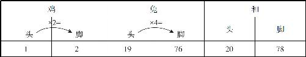
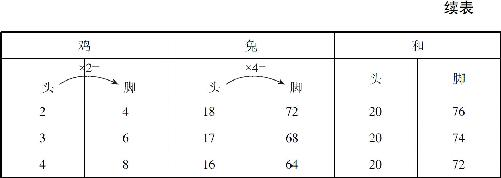

能够解决所有难题的通用解题思路是什么呢？那就是：不断试错，不断修正，笔耕不辍，其解自得．我们就先用这种办法解决一个工程技术难题，让大家领略一下这种方法的神奇魅力．
话说有一年黄河发大水，把上游的一个大树桩冲到了下游，这个树桩的树根深埋在河泥里头，树干直直地伸向水面，但是又刚好藏在水平面以下，从水面看去是什么都没看到的，但是船一走到这个地方，“砰”的一声就撞翻了．请问应该怎样把这个树桩挪走？这个问题一听就让人头疼，树根深埋在河泥下，挖起来肯定非常困难，那应该怎么办？
我们可以先试错：现在活不好干是因为有水，那我们把黄河里的水都放出去，树桩不就露出来了吗？然后就能把它挖出来了．可是我们怎么把黄河的水放出去呢？很简单，把黄河大堤扒了就行了．可是一定有人会说了：你这是什么损招，我们挪树桩的目的就是为了百姓方便，你把黄河大堤扒了，老百姓都淹死了，挪树桩有什么用？
别急，这个方法行不通不要紧，我们可以继续往下修正，为了防止百姓被淹，我们可以在扒黄河大堤之前，在旁边修一条新的黄河大堤出来，这样，旧的大堤扒掉了，水跑出去了，新的大堤又把水挡住了，老百姓就不会遭殃了．可问题是，修一条黄河大堤，十年二十年也干不完，为了一个树桩费这么大劲，太不值得了，怎么办？那就继续修正．
修一条大堤不行，那我们可以在这个树桩的附近圈出一条小堤来，只要把这个树桩附近的水都围住了，能够让我们把水抽出去，不就成了吗？这个思路可行，但真正操作起来，却无法实施！黄河水流非常湍急，把石头和沙袋一扔到水里，它们就被冲走了，根本行不通，那怎么办？别着急，可以继续修正．土石挡不住水，还有什么能挡水？可以用木板围成一个巨大的木桶，把这个树桩从上到下套起来，套到底下以后，把木桶压到河泥里面，然后再把大木桶里面的水抽出来就可以了．这就没错了，这个办法就是古人在1000多年前发现的水下工程作业的标准方法，直到现在，水利工程作业中还一直沿用．
瞧见没有，一个跟数学毫无关系的水利工程问题，也可以通过不断试错、不断修正的方法，得到解决答案．举这个例子的目的，当然不是介绍水利工程，而是为了证明：不断试错、不断修正的办法是解决一切问题的通用办法．接下来，我们就用这种办法来解决经典的鸡兔同笼问题：把鸡和兔子关在一起，它们共有20个头，60只脚，问鸡和兔子分别有几只？
我们现在知道，它只是一个简单的二元一次方程组问题，如果自己完全没有解题思路，我们应该怎么办呢？不断试错就行了．写不出算式、写不出答案不要紧，我们可以写一些“不完全符合题意，但是却和题目相关的数字”．
我们先在草稿纸上写下需要计算的内容，有鸡和兔子，再在鸡和兔子的下面分别写上头和脚，然后再在鸡和兔子的右边写上和，在和的下面也写上头和脚，这个分别表示鸡和兔子头一共有多少个、脚一共有多少只，然后尽量贴合题意地往下写．比如，一只鸡有2只脚，我们就在鸡头和脚的中间写上“×2＝”，这是什么意思呢？这表示鸡头的数量乘以2等于鸡脚的数量；同样，兔子有四只脚，也在兔子头和脚之间写下“×4＝”．写完这些数字，继续回顾题目，写下更多的与题目相关的数字，比如看到鸡和兔子的头一共有20个，那么，如果有1只鸡，肯定应该有19只兔子了，写下19只兔子，19只兔子有多少只脚呢？当然是19×4＝76只脚．然后继续回顾题目，发现鸡和兔子的脚还要求和，那么我们算一下2＋76，一共是78只脚．而题目要求的是60只脚，显然1只鸡和19只兔子不是这个题目的答案．不要紧，把这一行数据整理出来写清楚（见表9－1）：
表9－1


而后分别写下鸡有2只、3只、4只的情况，同时分别计算得出其他数值．这不是在瞎蒙吗？这样一次一次地试下去，当然能找到答案了，但是这样找到答案有什么意义？不要着急，解题的思路要在这些数字中去发现．如果我们把所有的数字对齐，一列一列地去看就会发现：鸡的数量每次加1，兔子的数量每次就减1，鸡脚的数量每次加2，兔子脚的数量每次减4，脚的总数呢，每次减2，为什么呢？因为每增加1只鸡就减少了1只兔子，减少的那只兔子比增加的鸡多2只脚，因此，脚的总数就每次减2．我们现在没有找到答案就是因为脚的总数不对，按照每次减2的规律，减多少次就能达到60只呢？于是，解决问题的关键思路就被我们从一堆数字中发现了：先假设20只动物都是兔子，结果就是80只脚，每增加1只鸡就会减少2只脚，此时我们就看一下题目中的60只脚比80只少了几只脚，最后用少的脚数除以2，得到的就是鸡的数目．也就是鸡的数目等于（20×4－60）÷（4－2）＝20÷2＝10（只），而兔子的数量则等于总数20－10＝10（只）．这样我们就找到了问题的答案．
这里着重讲述的并不是鸡兔同笼问题怎么求解，而是世界上任何一道数学题的通用解法，这种解法就是：在弄清题意的基础上，先给出部分符合题意的一组数据；然后按一定顺序陆续给出一个系列的数据；再从这些数据序列中反复观察、发现规律，把其中不符合题意的那部分数据的变化规律找出来；最后利用这个规律，求得最终的答案．当然，真正的求解过程并不会一帆风顺，很可能会陷入原地打转的死循环．但是不要紧，继续寻找题目中的其他条件，从头开始，只要思路无误，反复推算，最终一定可以得到正确答案．
笔耕不辍，其解自得！世界上最通用的解题办法你学会了吗？你可能会说了，找一堆数据来找规律，这个方法是不是笨了点呢？的确是这样，正因为它是最通用的办法，当然也就是最笨最慢的办法了，不过它也有三方面的好处：第一，可以磨炼我们的耐心和毅力；第二，可以让我们熟练掌握已有的知识；第三，还能让我们触类旁通地掌握与此相关的一些问题．但是，我们还想问一句，有没有比它更好更快的办法呢？当然有了！